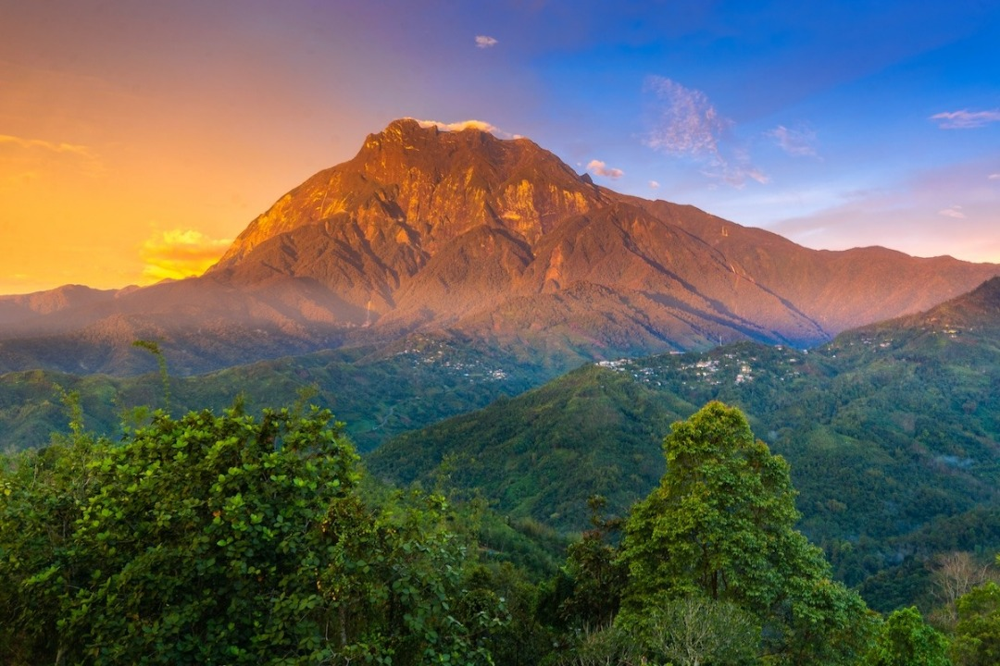

Mount Kinabalu is not only the iconic landmark of Sabah, but also a symbol of culture,
history,
and unmatched natural beauty. As one of the tallest mountains in Southeast Asia, it is more
than
just a tourist destination — it is a place rich with legends and local beliefs. In this
article, we will
explore the myths, historical background, and cultural significance of this majestic
mountain in Sabah.

One of the most well-known legends tells the story of a Chinese princess who waited
faithfully for her lover,
a local warrior, to return from a sea voyage. Unfortunately, he never came back. The
princess waited atop the
mountain until her death, and her spirit is said to still dwell on the mountain. This
romantic and tragic
tale adds a mystical element to Mount Kinabalu.
For the Kadazan-Dusun people, Mount Kinabalu is considered sacred. Every year, before major
climbing expeditions,
a ritual known as monolob is performed by a bobolian (a traditional priest or shaman). This
ceremony involves the
sacrifice of a chicken and prayers in an ancient dialect, seeking permission and protection
from the mountain spirits.